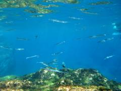
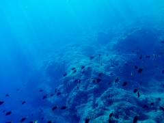

|
八丈島一泊旅行。一泊だけだし八丈島は二度目なので当初は旅記を書くつもりはなかったけれど、思った以上に楽しめたし海外はしばらく行けなそうなので書くことにした。
旅記によると前回行ったのは12年前だった。自転車持ち込んでサイクリングしていたらしいが、もうそんな元気はないので車を借りて海に行くのが今回のプラン。
出発三日前に天気予報を確認してから飛行機と宿を取った。レンタカーはわりと予約が埋まっており、3店目でやっと取れた。
今は出先ですが多分車は空いています、というのんびりした対応。
空港に降りたらレンタカー屋の老人が車で迎えに来てくれていた。この車です、と。
総走行距離 98000[km] で島 2000周以上走った数字の年季の入った軽自動車。ガタゴト楽しい。
早速目的の海に向かう。東の底土海水浴場。
ウミガメがいると聞いて探していたが、残念ながら見つからなかった。探し回って沖の方に出たらライフセーバーの人に注意された。
昼食に島寿司。うまい。
料理の写真は撮らないが店で飼っていた猫の写真は撮る。
午後の予定に迷っていたが、食事で回復したしウミガメが心残りだったので、別の海水浴場に行くことにした。今度は西のヤケンヶ浜海水浴場。
午前の海と比べて人が少ない、波が荒い、汚れた岩場という環境でちょっと泳ぎにくそう。
でも浜から少し離れて水深が深くなると良い感じ。
| 細長い。サヨリ? | 日が差し込んで美しい |
|  |
 |
しばらく泳いでいたら、遠くにウミガメを見つけ、興奮気味に追いまわした。
全身を使って泳ぐ魚と違って手足だけでパタパタ泳ぐ様子が可愛らしい。
追っていたら全部で3匹も見られた。すぐには逃げないのでかなり近くで並んで泳げて楽しかった。
写真撮影と追跡とのバランスに難儀しながら一心不乱に遊んでいたら、うっかりして強い波を受けて抗いきれずに岩場にぶつかった。
後で見たらわりとしっかり傷ができていて痛い。でも今日は満足。
|